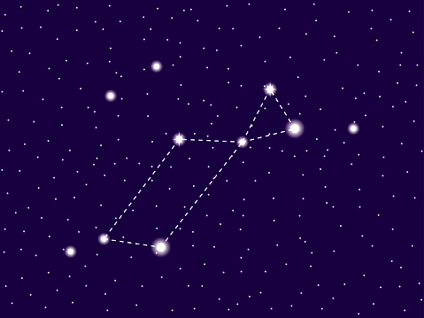
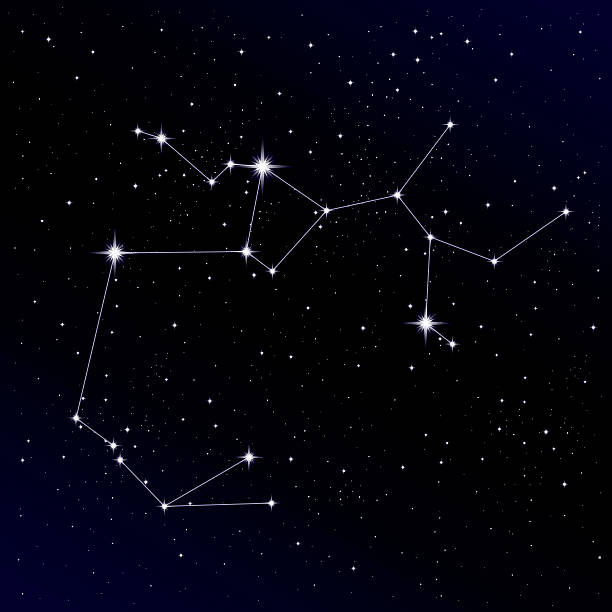
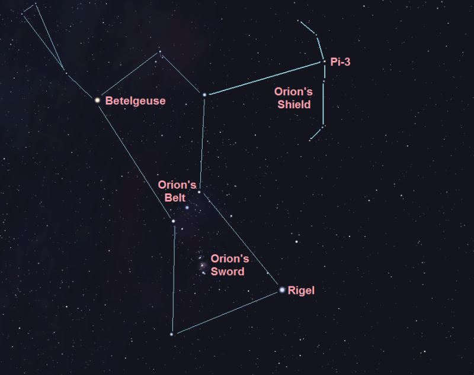

YILDIZLAR
Astronet Yıldızlar

Lyra ya da Çalgı takımyıldızı, modern 88 takımyıldızdan biridir. Yaz üçgenindeki yıldızların en parlağı olan Vega, bu takımyıldıza aittir.

Sagitta ya da Okçuk takımyıldızı, modern 88 takımyıldızdan biridir. Sagitta adı Latince'de ok anlamına gelmektedir. Bu takımyıldız Sagittarius (Yay) takımyıldızıyla karıştırılmamalıdır. Antik olduğu halde, 4. kadirden daha parlak yıldızı olmaması ve gökyüzündeki (Tay ve Güneyhaçı takımyıldızlarından sonra) en küçük takımyıldız olmasından ötürü önemsiz bir takımyıldızdır.

Orion (takımyıldız) Madde Tartışma Oku Düzenle Kaynağı değiştir Geçmişi gör Vikipedi, özgür ansiklopedi Orion Orion büyütmek için tıklayınız Kısaltma Ori Tamlayan Orionis Simge Orion Bahar açısı 5 sa. Yükselim 5° Alan 594 derece kare 26. sırada En parlak yıldızı Rigel (β Orionis) (Kadri 0.12) Parlak yıldızlar (kadir < 3) 8 Göktaşı yağmurları Orionids Chi Orionids Çevreleyen takımyıldızlar Gemini Taurus Eridanus Lepus Monoceros +85° ve −75° enlemleri arasında görülebilir. En iyi Ocak ayında saat 21:00'de görülebilir. Büyütmek için tıklayınız Kaynak: Mouser Williams Orion (Avcı Takımyıldızı), gök ekvatoru yakınında bulunan ve bu sayede tüm dünyadan görülebilinen, oldukça parlak yıldızlardan oluşmuş, kolay bulunabilinen bir takımyıldızdır.

Ayının arka ayakları ve kuyruğunda bulunan yedi parlak yıldız, tanınmış Büyük Kepçe şeklini oluşturur. Büyük Britanya'da bu şekil saban veya pulluk (İng. plough) olarak adlandırılır. Büyük Kepçe'nin Dubhe ve Alkaid hariç diğer yıldızları Yay takımyıldızı bölgesinde kalan bir noktanın çevresinde özdevinim hareketi yapmaktadırlar. Bu tarz bir hareket gösteren diğer başka yıldızlar da belirlenmiştir.